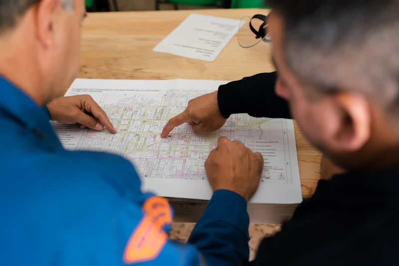

Energy & Oilfield Services
Asset-intensive operations where equipment availability, service coordination and documentation drive performance and safety.
Energy • Industrial Operations • Digital Innovation
I study how energy and industrial businesses operate, identify opportunities for digital transformation, and develop practical technology solutions that improve visibility, coordination, efficiency and decision-making.
Introduction
My work starts on the operational side: how equipment moves, how approvals flow, where information gets stuck between field, office and finance. From there I identify where a digital system would genuinely improve visibility and coordination, and where it would only add complexity.
I have a Computer Science background and practical experience designing, building and deploying business systems. Today I apply that capability to energy, marine and industrial operations, turning operational understanding into solutions people use every day.
More about my backgroundWorking at the intersection of Business OperationsTechnologyDigital Innovation
The approach
Every project follows the same sequence. Business understanding comes first; technology comes in only where it earns its place.
How the organization creates value, who does the work and which decisions matter most.
Where time, visibility or control is lost: manual records, unclear hand-offs, delayed information.
Where a digital system would genuinely help, and where it would only add another tool.
Workflows, roles, data and approvals designed around the real process, not a template.
Building, deploying and validating with the people who will use the system every day.
Clearer visibility, consistent workflows and better-informed operational decisions.
Industry focus
Energy businesses run on physical assets, strict compliance and constant hand-offs between field and office. That is exactly where well-designed digital systems make the biggest difference.
Asset-intensive operations where equipment availability, service coordination and documentation drive performance and safety.
 02
02
Vessels, equipment rental and offshore logistics, where compliance and traceability are non-negotiable.

03Field teams, site reporting and project visibility across distributed locations.
 04
04
Connecting operations, finance and management through shared information.
Featured case studies
Each project is presented the way it was approached: the operation first, then the challenge, then the system designed to address it.
Marine Operations · Digital Compliance · Business Systems
Equipment compliance records were brought into a structured digital system, giving staff direct access to the documentation and compliance information behind each piece of equipment.
Marine Operations · Operational Systems · Process Integration
An operational system connecting the equipment rental lifecycle, from request and inspection through contract approval, invoicing, payment, release, deployment and return, so operations and finance work from the same information.
Engineering Operations · Field Visibility · Digital Transformation
A platform for engineering firms that replaces field reporting scattered across messaging apps, spreadsheets and email with one connected view of tasks, check-ins, reports, issues and documents.
 04
04
Enterprise Operations · Joint Venture Coordination · Digital Systems
A digital systems project addressing coordination in joint venture operations, where several parties depend on shared, reliable operational information.
Technology & innovation
Capabilities organized around the problems they solve, not the tools they use. The technical skills are real, and they serve the business case.
Understanding the work before changing it.
Systems that connect people, processes and data.
Practical AI where it improves a real workflow, an area I am deepening through an M.Sc. in Artificial Intelligence.
Choosing the right technology for the right problem, and planning adoption.
Supporting toolkit PythonDjangoFlaskREST APIsSQLPower BIExcelJiraClickUpZapier
Experience
Experience coordinating teams, translating requirements and delivering digital products, now focused on the operational systems of energy and marine businesses.
Working as a digital operations analyst in practice: analyzing how marine operations run and turning that into systems. Delivered the Equipment Compliance System covering 52 equipment items, now in operational use, and developing PMOS to connect rental operations with finance visibility.
Led delivery of 5 digital platforms for a global network, translating organizational goals into structured technical solutions serving 2,000+ users annually.
Directed delivery of 10 B2B and B2C software products, achieving 15% faster time-to-market and 40% fewer post-release defects through improved planning and QA practices.
Managed full-cycle delivery of two products and designed a delivery process framework adopted across 3 internal teams, improving consistency and project visibility.
Maintained 99.5%+ system uptime and reduced downtime incidents by 35% through structured infrastructure protocols; delivered technical training to 150 learners.
Profile
I combine a Computer Science education with hands-on experience delivering software products and coordinating cross-functional teams. That combination lets me move comfortably between operations managers, finance teams and engineers.
I am now building deeper expertise in energy operations, technology strategy and applied AI, with the goal of helping energy and industrial organizations realize real value from technology.
More work
Digital products across hospitality, healthcare, education, finance and community: the delivery experience behind my operational work.
Industry insights
Perspectives on digital transformation, AI and operational systems in energy, written from practical project experience. The first pieces are in preparation.

Why the most valuable energy technology projects begin with mapping how assets, people and approvals actually move.

Document intelligence, reporting and decision support: separating practical use from hype.

What it takes to digitize equipment compliance records that people rely on daily.

Opportunities for practical, locally grounded technology in upstream, midstream and services.
Contact
Interested in digital transformation, technology opportunities, industrial innovation or building practical solutions for operational challenges? Let's connect.
ifeoluwaakinpelu05@gmail.comShare a little context about your operation or idea. All fields are required.